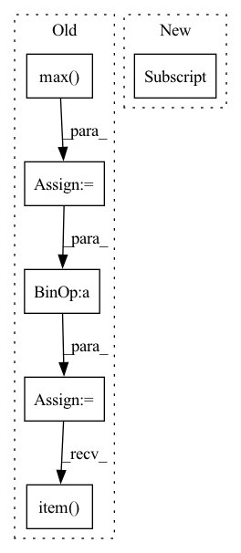

Pattern ID :12465

Before Change
size = [fixed_size[1], fixed_size[0]]
else:
min_size = torch.min(im_shape).to(dtype=torch.float32)
max_size = torch.max(im_shape).to(dtype=torch.float32)
scale = torch.min(self_min_size / min_size, self_max_size / max_size)
if torchvision._is_tracing():
scale_factor = _fake_cast_onnx(scale)
else:
scale_factor = scale.item()
recompute_scale_factor = True
image = F.interpolate(
image[None],
After Change
else:
im_shape = torch.tensor(image.shape[-2:])
ratio = torch.min(new_shape[0] / im_shape[0], new_shape[1] / im_shape[1])
ratio_h = torch.round(im_shape[0] * ratio).to(dtype=torch.int32)
ratio_w = torch.round(im_shape[1] * ratio).to(dtype=torch.int32)
In pattern: SUPERPATTERN
Frequency: 4
Non-data size: 6
Instances
Fragment ID: 42387622
Project Name: zhiqwang/yolov5-rt-stack
Commit Name: cd1a6ec7cda09de0dc92962a37ecb4f723a8dfeb
Time: 2022-02-03
Author: 92794867+q3394101@users.noreply.github.com
File Name: yolort/models/transform.py
M Class Name: AnonimousClass
N Class Name: AnonimousClass
M Method Name: _resize_image_and_masks(3)
N Method Name: _resize_image_and_masks(5)
M Parent Class:
N Parent Class:
M File Name: yolort/models/transform.py
N File Name: yolort/models/transform.py
M Start Line: 257
M End Line: 286
N Start Line: 67
N End Line: 77
'>
Before Change
List of floats of length num_classes+1 (last item is mIoU).
num_classes = scores.size(-2)
predictions = torch.max(scores, dim=-2).indices
ious = []
n_total = 0
n_correct = 0
for label in range(num_classes):
pred_mask = predictions == label
labels_mask = labels == label
iou = (pred_mask & labels_mask).float().sum()
n_correct += iou
iou = iou / (pred_mask | labels_mask).float().sum()
n_total += (pred_mask | labels_mask).float().sum()
ious.append(iou.cpu().item())
ious.append(np.nanmean(ious))
return ious
After Change
ious = []
for label in range(self.num_classes):
tp = np.longlong(self.confusion_matrix[label, label])
fn = np.longlong(self.confusion_matrix[label, :].sum()) - tp
fp = np.longlong(self.confusion_matrix[:, label].sum()) - tp
if tp + fp + fn == 0:
'>
Fragment ID: 42387620
Project Name: intel-isl/open3d-ml
Commit Name: 67123f7e9d5dbbe6a73c42ef648093a7d25ace4a
Time: 2021-05-11
Author: sanskaragrawal107@gmail.com
File Name: ml3d/torch/modules/metrics/semseg_metric.py
M Class Name: SemSegMetric
N Class Name: SemSegMetric
M Method Name: iou(1)
N Method Name: iou(3)
M Parent Class: object
N Parent Class: object
M File Name: ml3d/torch/modules/metrics/semseg_metric.py
N File Name: ml3d/torch/modules/metrics/semseg_metric.py
M Start Line: 74
M End Line: 103
N Start Line: 57
N End Line: 86
'>
Before Change
return adv_samples
def prepare_attack(self, x, eps):
max_ = x.max()
min_ = x.min()
data_range = max_ - min_
attack_params = {"epsilons": eps * data_range.item(),
"lb": min_,
"ub": max_}
self.attack = CFoolboxPGDLinf(
After Change
"lb": self.lb,
"ub": self.ub})
attack_cls, is_min_distance, \
self.is_secml_class, attack_norm = SUPPORTED_ATTACKS[attack]
if is_min_distance is False:
attack_params.update({"epsilons": eps})
if self.is_secml_class:
self.attack = attack_cls(
'>
Fragment ID: 42387604
Project Name: maurapintor/pandavision
Commit Name: 9f11a21e6a90c95602da5c82c73d7a5522305c25
Time: 2021-11-02
Author: maura.pintor@gmail.com
File Name: app/adv/classification/attack_classification.py
M Class Name: AttackClassification
N Class Name: AttackClassification
M Method Name: prepare_attack(4)
N Method Name: prepare_attack(3)
M Parent Class: AttackBase
N Parent Class: AttackBase
M File Name: app/adv/classification/attack_classification.py
N File Name: app/adv/classification/attack_classification.py
M Start Line: 33
M End Line: 42
N Start Line: 47
N End Line: 66